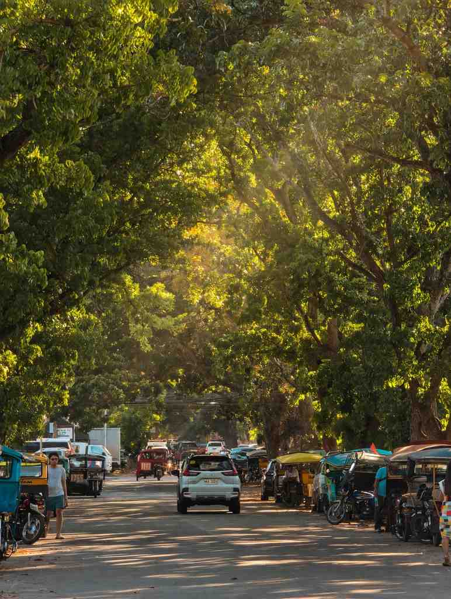

A thousand pesos goes a long way in Dumaguete, but how far depends on what you spend it on. Kept to street food, tricycles and free sights, it covers a full day in the city with change left over. Spent on one side trip out of town, it can vanish before lunch.
This guide breaks ₱1,000 into real things you can buy: how much the usual snacks and rides cost, three sample days that fit inside the budget, and the trips that need more money than a single bill. It does not cover a room for the night, which is a separate cost.
Prices below are typical ranges for 2026 and shift with the season, the vendor and fuel prices. Use them as a guide, carry small bills, and you will rarely be surprised.

What Things Cost in Dumaguete
A quick price list makes the rest of this guide easier to follow.
Getting around
The minimum tricycle fare inside the city was ₱15 in early 2026, with a 20 percent discount for students, seniors and persons with disabilities, and drivers have asked the city for a ₱5 increase. Short hops downtown stay close to that minimum, but longer rides, late-night trips and anything that looks like a tourist pickup cost more. Agree on the fare before you sit down. Jeepneys from the city terminal to Valencia run about ₱20 one way.
Food and snacks
This is where ₱1,000 stretches furthest. At the public market, a painit breakfast of rice cakes, budbud and hot sikwate costs roughly ₱50 to ₱80 a head. Budbud kabog, the millet rice cake wrapped in banana leaf, sells for about ₱10 to ₱15, and puto maya for around ₱10. On Rizal Boulevard at night, tempura sticks and kwek-kwek go for ₱10 to ₱15 each, and a halo-halo runs ₱60 to ₱100.
For a sit-down meal, a plate of chicken inato at a local grill costs roughly ₱105 to ₱150, and a grilled seafood plate from a street stall about ₱100 to ₱250. Silvanas, the city's frozen cashew-meringue cookies, sell for about ₱15 to ₱25 apiece, while a pack at Sans Rival starts at around ₱280, which makes them the easiest way to blow a third of the budget in one stop.
Entrance fees
Many of the best sights in the city are free: Rizal Boulevard, the belfry and cathedral, the Silliman campus and the National Museum branch. Out of town, the Valencia waterfalls such as Casaroro and Pulangbato charge under ₱100 a person, depending on the entry point. At Balinsasayao Twin Lakes in Sibulan, expect a small entrance fee plus about ₱250 an hour for a paddle boat with a local rower.
Day One: The City on Foot
This is the day where ₱1,000 feels generous.
Start at the public market for painit, with budbud kabog and a cup of sikwate, and budget about ₱100 for the lot. Walk to the belfry and cathedral, then through the Silliman University grounds, all free. Stop for coffee and a pastry midmorning at one of the cafés near the campus, roughly ₱150 to ₱200. Lunch at a carinderia, rice with one or two viands, comes to around ₱100 to ₱150.
Spend the afternoon at the museum or out of the heat, then head to the boulevard at sunset. A handful of tempura sticks, kwek-kwek and a halo-halo add up to about ₱150. Dinner at a chicken inato grill costs another ₱150 or so. Add two or three tricycle rides and a box of silvanas to take home, and the day lands somewhere between ₱800 and ₱1,000.
Our first-timer's food trip in Dumaguete has more stops if you want to swap any of these out.
Day Two: Valencia's Waterfalls
Valencia sits about 20 to 30 minutes inland and is the cheapest nature trip from the city. Take a jeepney from the terminal for around ₱20, and from the town centre hire a habal-habal or tricycle for the final climb to the falls. That last stretch is the cost to watch: fares vary by distance, so settle the price and the waiting time before you go.
Entrance to one or two waterfalls costs under ₱100 each. A simple lunch in town is ₱100 to ₱150. Altogether, a solo traveller can usually keep the day close to ₱1,000, and two people sharing a ride bring the cost per person well under it. Bring water shoes and a dry bag; the paths down to the falls can be steep and slippery after rain.
Day Three: Twin Lakes, if You Share
Balinsasayao Twin Lakes is the trip that shows the limits of a single bill. The lakes are an hour into the hills above Sibulan, and a habal-habal round trip has cost roughly ₱600 to ₱800 per rider, with waiting time included. Add the entrance fee, an hour on a paddle boat and lunch, and a solo visit can go past ₱1,000.
Split the boat with a friend, pack your own snacks, and it fits. The Balinsasayao Twin Lakes guide covers the ride up and what to do once you are there.
What ₱1,000 Will Not Cover
Some of the area's best trips need a bigger budget, mainly because of boats.
Apo Island needs a pumpboat from Malatapay or Dauin, and those charters run into the thousands, so the trip only gets near ₱1,000 per person in a full group. The Manjuyod sandbar works the same way. A fast ferry to Siquijor costs about ₱350 or more each way before terminal and environmental fees, so a return trip plus a day on the island goes well past the budget. Scuba diving in Dauin is a separate cost altogether.
For these, think of ₱1,000 as your food and transport money for the day and budget the boat on top. If Siquijor is on your list, the Dumaguete to Siquijor guide breaks down the crossing.
Making ₱1,000 Last Longer
Eat your big meal at lunch. Carinderias and market stalls are cheapest during the day, and the boulevard snacks cover a light dinner.
Walk the centre. Downtown Dumaguete is compact, and most of the sights in the centre are within walking distance of each other. Save tricycles for longer or late rides.
Carry coins and small notes. Vendors at the market and on the boulevard often cannot change ₱500 or ₱1,000 bills early in the day.
Buy pasalubong last. Silvanas need to stay frozen, so pick them up on the way back to your room or on the morning you leave.
Group up for anything with a boat or a habal-habal. Shared transport is what turns a ₱1,500 day into a ₱700 one.
The Short Answer
In the city, ₱1,000 buys a full day of local food, a few tricycle rides and a box of silvanas to bring home. Out of town, it covers one nearby waterfall trip comfortably, Twin Lakes if you share costs, and none of the island trips on its own. Spend it on food and walking, and Dumaguete is one of the cheapest good days in the Visayas.

Comments
No comments yet. Been here recently? Share a tip or ask a question.
Leave a Reply